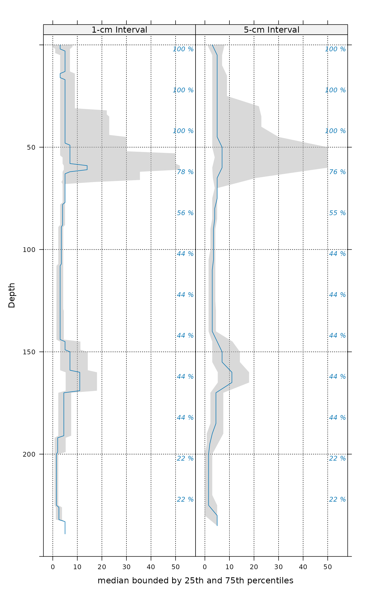
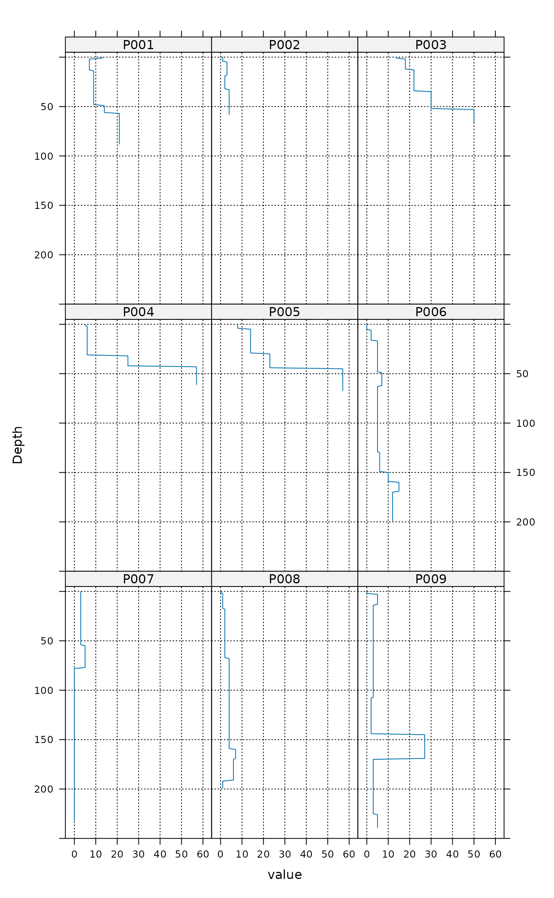
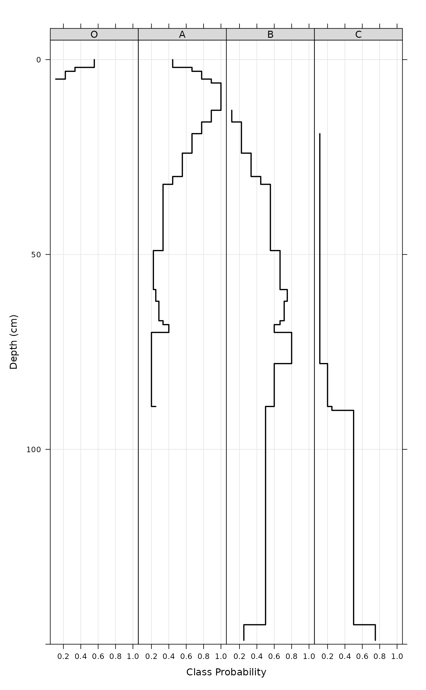
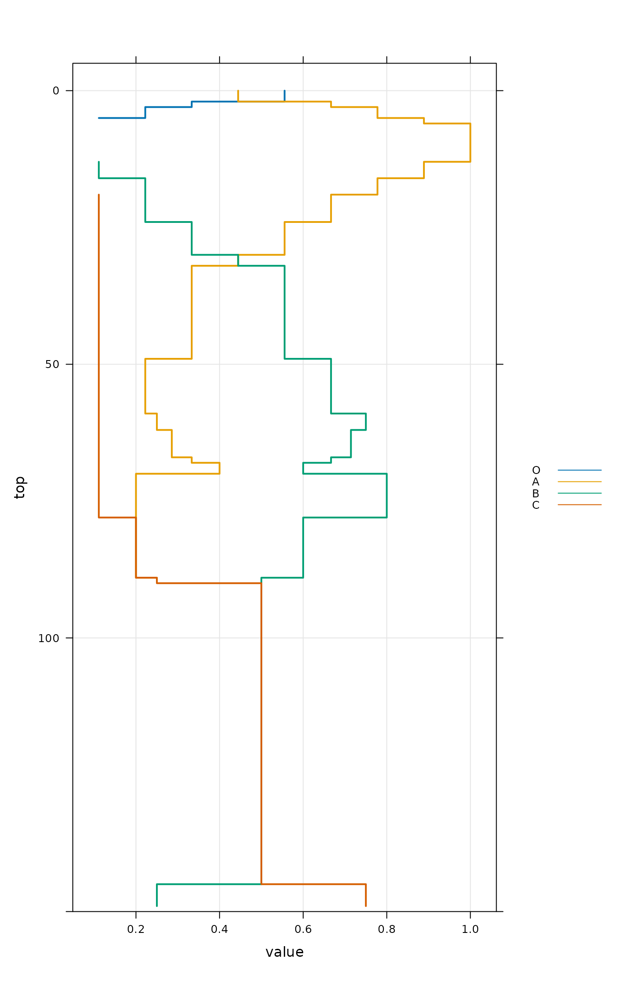
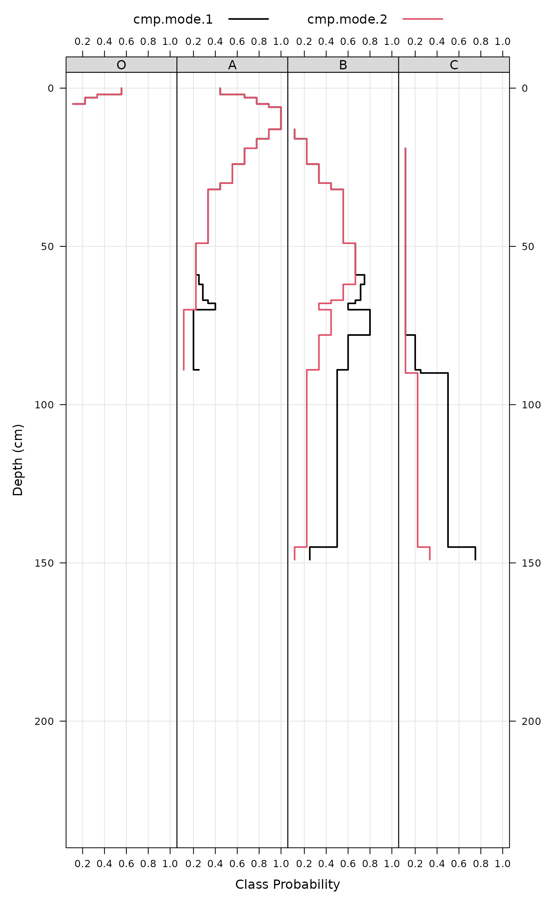

Aggregate soil properties along user-defined slabs, and optionally within
groups.
Multiple continuous variables OR a single categorical (factor) variable can
be aggregated within a call to slab(). Basic error checking is
performed to make sure that top and bottom horizon boundaries make sense.
User-defined aggregate functions (slab.fun) should return a named
vector of results. A new, named column will appear in the results of
slab() for every named element of a vector returned by slab.fun.
See examples below for a simple example of a slab function that computes
mean, mean +/- 1 standard deviation. The default slab function wraps
stats::quantile(). Note that if group is a factor it must not contain NAs.
slab() uses dice() to "resample" profiles to 1cm slices from depth 0 to max(x) (or slab.structure[2], if defined).
Sometimes slab() is used to conveniently re-arrange data vs. aggregate.
This is performed by specifying identity in slab.fun. See
examples below for a demonstration of this functionality.
The default slab.fun was changed 2019-10-30 from a wrapper around
Hmisc::hdquantile() to a wrapper around stats::quantile(). See
examples below for a simple way to switch to the HD quantile estimator.
Execution time scales linearly (slower) with the total number of profiles in
object, and exponentially (faster) as the number of profiles / group
is increased. slab() and dice() are much faster and require less
memory if input data are either numeric or character.
There are several possible ways to define slabs, using slab.structure:
a single integer, e.g. 10: data are aggregated over a regular sequence of 10-unit thickness slabs
a vector of 2 integers, e.g. c(50, 60): data are aggregated over depths spanning 50-60 depth units
a vector of 3 or more integers, e.g. c(0, 5, 10, 50, 100): data are aggregated over the depths spanning 0-5, 5-10, 10-50, 50-100 depth units
Usage
# S4 method for class 'SoilProfileCollection'
slab(
object,
fm,
slab.structure = 1,
strict = FALSE,
byhz = TRUE,
slab.fun = slab_function(method = "numeric"),
cpm = 1,
weights = NULL,
...
)
slab_function(
method = c("numeric", "factor", "hd", "weighted.numeric", "weighted.factor", "fast")
)Arguments
- object
a SoilProfileCollection
- fm
A formula: either
groups ~ var1 + var2 + var3where named variables are aggregated withingroups' OR where named variables are aggregated across the entire collection~ var1 + var2 + var3. Ifgroupsis a factor it must not containNA`- slab.structure
integer vector: user-defined slab structure. See Details.
- strict
logical: should horizons be strictly checked for self-consistency?
- byhz
logical: should horizons or whole profiles be removed by logic checks in
strict? DefaultTRUEremoves only offending horizons,FALSEremoves whole profiles with one or more illogical horizons.- slab.fun
Function used to process each 'slab' of data, ideally returning a vector with names attribute. Defaults to a wrapper function around
stats::quantile(). See details.- cpm
Strategy for normalizing slice-wise probabilities, dividing by either:
number of profiles with data at the current slice (
cpm = 1), orby the number of profiles in the collection (
cpm = 2).
Mode 1 values will always sum to the contributing fraction, while mode 2 values will always sum to 1.
- weights
Column name containing site-level weights
- ...
further arguments passed to
slab.fun- method
one of
"numeric","factor","hd","weighted.numeric","weighted.factor","fast"
Value
Output is returned in long format, such that slice-wise aggregates are returned once for each combination of grouping level (optional), variable described in the fm argument, and depth-wise 'slab'.
Aggregation of numeric variables, using the default slab function:
variable: The names of variables included in
fmgroupname: The name of the grouping variable when provided, otherwise a fake grouping variable named 'all.profiles'.
p.q5: The slice-wise 5th percentile.
p.q25: The slice-wise 25th percentile
p.q50: The slice-wise 50th percentile (median)
p.q75: The slice-wise 75th percentile
p.q95: The slice-wise 95th percentile
top: The slab top boundary
bottom The slab bottom boundary.
contributing_fraction: The fraction of profiles contributing to the aggregate value, ranges from 1/n_profiles to 1
When a single factor variable is used, slice-wise probabilities for each level of that factor are returned as:
variable: The names of factor variable included in
fmgroupname: The name of the grouping variable when provided, otherwise a fake grouping variable named 'all.profiles'
A: The slice-wise probability of level A
B: The slice-wise probability of level B
n: The slice-wise probability of level n
top: The slab top boundary.
bottom: The slab bottom boundary
contributing_fraction: The fraction of profiles contributing to the aggregate value, ranges from 1/n_profiles to 1
slab_function(): return an aggregation function based on the method argument
Details
slab_function(): The default "numeric" aggregation method is the "fast" numeric (quantile) method. Additional methods include "factor" for categorical data, "hd" to use the Harrell-Davis Distribution-Free Quantile Estimator from the Hmisc package, and "weighted" to use a weighted quantile method from the Hmisc package
Note
Arguments to slab() have changed with aqp 1.5 (2012-12-29) as part of a code clean-up and optimization. Calculation of
weighted-summaries was broken in aqp 1.2-6 (2012-06-26), and removed as of aqp 1.5 (2012-12-29). slab()“ replaced the previously defined soil.slot.multiple function as of aqp 0.98-8.58 (2011-12-21).
Methods
- data = "SoilProfileCollection"
Typical usage, where input is a
SoilProfileCollection.
References
D.E. Beaudette, P. Roudier, A.T. O'Geen, Algorithms for quantitative pedology: A toolkit for soil scientists, Computers & Geosciences, Volume 52, March 2013, Pages 258-268, 10.1016/j.cageo.2012.10.020.
Harrell FE, Davis CE (1982): A new distribution-free quantile estimator. Biometrika 69:635-640.
Examples
##
## basic examples
##
library(lattice)
library(grid)
library(data.table)
# load sample data, upgrade to SoilProfileCollection
data(sp1)
depths(sp1) <- id ~ top + bottom
hzdesgnname(sp1) <- "name"
# aggregate entire collection with two different segment sizes
a <- slab(sp1, fm = ~ prop)
#> horizons with zero thickness have been omitted from results
b <- slab(sp1, fm = ~ prop, slab.structure=5)
#> horizons with zero thickness have been omitted from results
# check output
str(a)
#> 'data.frame': 240 obs. of 10 variables:
#> $ variable : Factor w/ 1 level "prop": 1 1 1 1 1 1 1 1 1 1 ...
#> $ all.profiles : num 1 1 1 1 1 1 1 1 1 1 ...
#> $ p.q5 : num 0 0 0 0.4 0.4 0.4 1.4 1.4 1.4 1.4 ...
#> $ p.q25 : num 0 0 1 1 1 3 3 3 3 3 ...
#> $ p.q50 : num 3 3 3 5 5 5 5 5 5 5 ...
#> $ p.q75 : num 8 8 7 7 7 7 7 7 7 7 ...
#> $ p.q95 : num 13.6 13.6 14 14 14 16.4 16.4 16.4 16.4 16.4 ...
#> $ contributing_fraction: num 1 1 1 1 1 1 1 1 1 1 ...
#> $ top : int 0 1 2 3 4 5 6 7 8 9 ...
#> $ bottom : int 1 2 3 4 5 6 7 8 9 10 ...
# stack into long format
ab <- make.groups(a, b)
ab$which <- factor(ab$which, levels=c('a','b'),
labels=c('1-cm Interval', '5-cm Interval'))
# plot median and IQR
# custom plotting function for uncertainty viz.
xyplot(top ~ p.q50 | which, data=ab, ylab='Depth',
xlab='median bounded by 25th and 75th percentiles',
lower=ab$p.q25, upper=ab$p.q75, ylim=c(250,-5),
panel=panel.depth_function,
prepanel=prepanel.depth_function,
cf=ab$contributing_fraction,
alpha=0.5,
layout=c(2,1), scales=list(x=list(alternating=1))
)

###
### re-arrange data / no aggregation
###
# load sample data, upgrade to SoilProfileCollection
data(sp1)
depths(sp1) <- id ~ top + bottom
#> This is already a SoilProfileCollection-class object, doing nothing.
# arrange data by ID
a <- slab(sp1, fm = id ~ prop, slab.fun=identity)
#> horizons with zero thickness have been omitted from results
# convert id to a factor for plotting
a$id <- factor(a$id)
# check output
str(a)
#> 'data.frame': 2160 obs. of 6 variables:
#> $ variable : Factor w/ 1 level "prop": 1 1 1 1 1 1 1 1 1 1 ...
#> $ id : Factor w/ 9 levels "P001","P002",..: 1 1 1 1 1 1 1 1 1 1 ...
#> $ value : int 13 13 7 7 7 7 7 7 7 7 ...
#> $ contributing_fraction: num 1 1 1 1 1 1 1 1 1 1 ...
#> $ top : int 0 1 2 3 4 5 6 7 8 9 ...
#> $ bottom : int 1 2 3 4 5 6 7 8 9 10 ...
# plot via step function
xyplot(top ~ value | id, data=a, ylab='Depth',
ylim=c(250, -5), as.table=TRUE,
panel=panel.depth_function,
prepanel=prepanel.depth_function,
scales=list(x=list(alternating=1))
)

##
## categorical variable example
##
data(sp1)
depths(sp1) <- id ~ top + bottom
#> This is already a SoilProfileCollection-class object, doing nothing.
# normalize horizon names: result is a factor
sp1$name <- generalize.hz(
sp1$name,
new = c('O','A','B','C'),
pat = c('O', '^A','^B','C')
)
# compute slice-wise probability so that it sums to contributing fraction, from 0-150
a <- slab(sp1, fm= ~ name, cpm=1, slab.structure=0:150)
#> horizons with zero thickness have been omitted from results
# convert wide -> long for plotting
# result is a data.table
# genhz factor levels are set by order in `measure.vars`
a.long <- data.table::melt(
data.table::as.data.table(a),
id.vars = c('top','bottom'),
measure.vars = c('O', 'A', 'B', 'C'),
)
# plot horizon type proportions using panels
xyplot(top ~ value | variable,
data = a.long, subset=value > 0,
col = 1, lwd = 2,
xlab = 'Class Probability',
ylab = 'Depth (cm)',
strip = strip.custom(bg = grey(0.85)),
scales = list(x = list(alternating = FALSE)),
ylim = c(150, -5), type=c('S','g'),
horizontal = TRUE, layout = c(4,1)
)

# again, this time using groups
xyplot(top ~ value,
data = a.long,
groups = variable,
subset = value > 0,
ylab = 'Depth (cm)',
ylim = c(150, -5),
type = c('S','g'),
horizontal = TRUE,
asp = 2,
lwd = 2,
auto.key = list(
lines = TRUE,
points = FALSE,
cex = 0.8,
columns = 1,
space = 'right'
)
)

# adjust probability to size of collection, from 0-150
a.1 <- slab(sp1, fm= ~ name, cpm = 2, slab.structure = 0:150)
#> horizons with zero thickness have been omitted from results
# convert wide -> long for plotting
# result is a data.table
# genhz factor levels are set by order in `measure.vars`
a.1.long <- data.table::melt(
data.table::as.data.table(a.1),
id.vars = c('top','bottom'),
measure.vars = c('O','A','B','C')
)
# combine aggregation from `cpm` modes 1 and 2
g <- make.groups(cmp.mode.1 = a.long, cmp.mode.2 = a.1.long)
# plot horizon type proportions
xyplot(top ~ value | variable,
groups = which,
data = g, subset = value > 0,
ylim = c(240, -5),
type = c('S','g'),
horizontal = TRUE,
layout = c(4,1),
auto.key = list(lines = TRUE, points = FALSE, columns = 2),
par.settings = list(superpose.line = list(col = c(1, 2), lwd = 2)),
scales = list(alternating = 3),
xlab = 'Class Probability',
ylab = 'Depth (cm)',
strip = strip.custom(bg = grey(0.85))
)

# apply slice-wise evaluation of max probability, and assign ML-horizon at each slice
gen.hz.ml <- get.ml.hz(a, c('O','A','B','C'))
if (FALSE) { # \dontrun{
##
## HD quantile estimator
##
library(soilDB)
library(lattice)
library(data.table)
# sample data
data('loafercreek', package = 'soilDB')
# defaul slab.fun wraps stats::quantile()
a <- slab(loafercreek, fm = ~ total_frags_pct + clay)
# use HD quantile estimator from Hmisc package instead
a.HD <- slab(loafercreek, fm = ~ total_frags_pct + clay, slab.fun = aqp:::.slab.fun.numeric.HD)
# combine
g <- make.groups(standard=a, HD=a.HD)
# note differences
densityplot(~ p.q50 | variable, data=g, groups=which,
scales=list(relation='free', alternating=3, tick.number=10, y=list(rot=0)),
xlab='50th Percentile', pch=NA, main='Loafercreek',
auto.key=list(columns=2, points=FALSE, lines=TRUE),
par.settings=list(superpose.line=list(lwd=2, col=c('RoyalBlue', 'Orange2')))
)
# differences are slight but important
xyplot(
top ~ p.q50 | variable, data=g, groups=which,
xlab='Value', ylab='Depth (cm)',
asp=1.5, main='Loafercreek',
lower=g$p.q25, upper=g$p.q75,
sync.colors=TRUE, alpha=0.25, cf=g$contributing_fraction,
ylim=c(115,-5), layout=c(2,1), scales=list(x=list(relation='free')),
par.settings=list(superpose.line=list(lwd=2, col=c('RoyalBlue', 'Orange2'))),
strip=strip.custom(bg=grey(0.85)),
panel=panel.depth_function,
prepanel=prepanel.depth_function,
auto.key=list(columns=2, lines=TRUE, points=FALSE)
)
##
## multivariate examples
##
data(sp3)
# add new grouping factor
sp3$group <- 'group 1'
sp3$group[as.numeric(sp3$id) > 5] <- 'group 2'
sp3$group <- factor(sp3$group)
# upgrade to SPC
depths(sp3) <- id ~ top + bottom
site(sp3) <- ~ group
# custom 'slab' function, returning mean +/- 1SD
mean.and.sd <- function(values) {
m <- mean(values, na.rm=TRUE)
s <- sd(values, na.rm=TRUE)
upper <- m + s
lower <- m - s
res <- c(mean=m, lower=lower, upper=upper)
return(res)
}
# aggregate several variables at once, within 'group'
a <- slab(sp3, fm = group ~ L + A + B, slab.fun = mean.and.sd)
# check the results:
# note that 'group' is the column containing group labels
xyplot(
top ~ mean | variable, data=a, groups=group,
lower=a$lower, upper=a$upper,
sync.colors=TRUE, alpha=0.5,
cf = a$contributing_fraction,
xlab = 'Mean Bounded by +/- 1SD',
ylab = 'Depth (cm)',
ylim=c(125,-5), layout=c(3,1),
scales=list(x=list(relation='free')),
par.settings = list(superpose.line=list(lwd=2, col=c('RoyalBlue', 'Orange2'))),
panel = panel.depth_function,
prepanel = prepanel.depth_function,
strip = strip.custom(bg=grey(0.85)),
auto.key = list(columns=2, lines=TRUE, points=FALSE)
)
# compare a single profile to the group-level aggregate values
a.1 <- slab(sp3[1, ], fm = group ~ L + A + B, slab.fun = mean.and.sd)
# manually update the group column
a.1$group <- 'profile 1'
# combine into a single data.frame:
g <- rbind(a, a.1)
# plot with customized line styles
xyplot(
top ~ mean | variable, data=g, groups=group, subscripts=TRUE,
lower=a$lower, upper=a$upper, ylim=c(125,-5),
layout=c(3,1), scales=list(x=list(relation='free')),
xlab = 'Mean Bounded by +/- 1SD',
ylab = 'Depth (cm)',
panel=panel.depth_function,
prepanel=prepanel.depth_function,
sync.colors = TRUE, alpha = 0.25,
par.settings = list(
superpose.line = list(
col = c('orange', 'royalblue', 'black'),
lwd = 2, lty = c(1,1,2)
)
),
strip = strip.custom(bg=grey(0.85)),
auto.key = list(columns=3, lines=TRUE, points=FALSE)
)
## again, this time for a user-defined slab from 40-60 cm
a <- slab(sp3,
fm = group ~ L + A + B,
slab.structure = c(40,60),
slab.fun = mean.and.sd
)
# now we have weighted average properties (within the defined slab)
# for each variable, and each group
# convert long -> wide
data.table::dcast(
data.table::as.data.table(a),
formula = group + top + bottom ~ variable,
value.var = 'mean'
)
## this time, compute the weighted mean of selected properties, by profile ID
a <- slab(sp3,
fm = id ~ L + A + B,
slab.structure = c(40,60),
slab.fun = mean.and.sd
)
# convert long -> wide
data.table::dcast(
data.table::as.data.table(a),
formula = id + top + bottom ~ variable,
value.var = 'mean'
)
## aggregate the entire collection, using default slab function
## note the missing left-hand side of the formula
a <- slab(sp3, fm = ~ L + A + B)
} # }